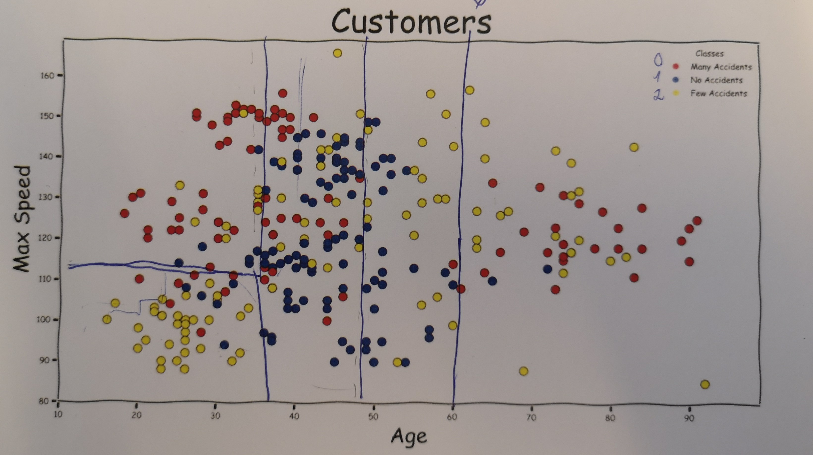
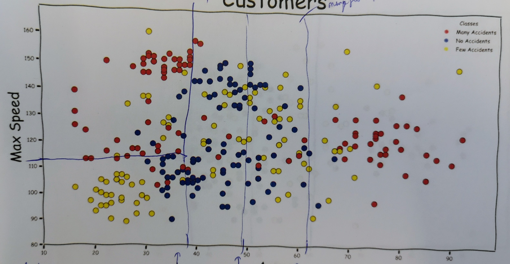

ML Supervised Intro
Oliver Zeigermann / @DJCordhose
Classification based on known data

Programmer's approach: Code Rules by Hand
def calculate_risk(age, speed):
if age < 25:
if speed > 110:
return high # young people, fast cars
else:
return medium # young people
if age > 70:
return high # seniors if speed > 145:
return high # fast cars in general # this default vastly simplifies rule set
return low # otherwiseUse Off-the shelf Neuronal Network (fully trained)
from tensorflow.keras.applications.mobilenet_v2 import MobileNetV2
model = MobileNetV2(weights='imagenet', input_shape=(224, 224, 3))
prediction = model.predict(img)
> ('n02124075', 'Egyptian_cat', 0.43944412)
Train Off-the shelf Neuronal Network (structure only)
Training
from tensorflow.keras.applications.mobilenet_v2 import MobileNetV2
model = MobileNetV2(classes=num_classes, weights=None,
input_shape=(1920, 1080, 3))
model.compile(loss='sparse_categorical_crossentropy',
optimizer='adam')
model.fit(X, y)
Prediction
prediction = model.predict(img)
> ('n02124075', 'Egyptian_cat', 0.43944412)
Train traditionell ML Algorithm
Training
from sklearn.tree import DecisionTreeClassifier
clf = DecisionTreeClassifier()
clf.fit(X, y)
Prediction
y_pred = clf.predict(input)
Create and Train custom Neuronal Network (standard Architecture)
model = tf.keras.Sequential()
model.add(Conv2D(filters=32, activation='relu')
model.add(BatchNormalization())
model.add(MaxPooling2D(pool_size=2))
model.add(Dropout(dropout))
model.add(Conv2D(filters=64, activation='relu'))
model.add(BatchNormalization())
model.add(MaxPooling2D(pool_size=2))
model.add(Dropout(dropout))
model.add(Flatten())
model.add(Dense(256, activation='relu'))
model.add(Dropout(dropout))
model.add(Dense(num_classes, activation='softmax'))
Do whatever on tensor level
init W, U, V
for i in range(0, len(X)):
x = X[i]
h = torch.zeros(nhidden, 1)
for t in range(len(x)):
h = W@h + U@onehot(x[t])
h = torch.relu(h)
o = V@h
o = softmax(o)
loss = cross_entropy(o, y[i])
update W,U,V towards lower loss
https://explained.ai/rnn/implementation.html#sec:1.5
Code in Scikit-learn
Training
from sklearn.tree import DecisionTreeClassifier
clf = DecisionTreeClassifier()
clf.fit(X, y)
Prediction
y_pred = clf.predict(input)
https://colab.research.google.com/github/djcordhose/ml-workshop/blob/master/notebooks/intro/supervised.ipynb
The Issue: Overfitting

Training Score


Test Score
Training Score
Test Score
Training and test scores clearly divert
A different setting: this generalizes well, but has another issue

Training Data

Test Data
If both test and training are pretty bad, this is called underfitting